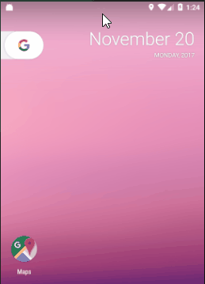
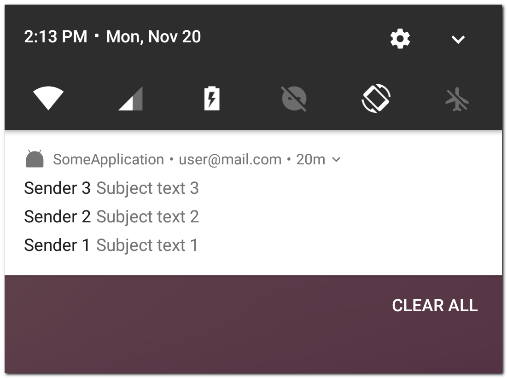

В Android 7 (API 24) появилась возможность группировать уведомления. Даже если вы это явно не реализуете, система сама создаст группу, если у вас 4 и более уведомлений.
Выглядит это так:

Вы можете развернуть/свернуть/удалить группу. На отдельное уведомление вы также можете нажать или удалить его. Если уведомлений в группе становится меньше 4, то уведомления становятся отдельными от группы.
Все ваши уведомления будут попадать в одну безымянную группу. По умолчанию, нажатие на эту группу откроет приложение.
Рассмотрим, какие возможности управления группами нам даны.
Мы можем:
1) создавать несколько групп и сами решать, в какую из них пойдет новое уведомление. Группа будет отображаться, когда в ней есть хотя бы два уведомления.
2) добавить к группе текстовое описание
3) добавить к группе PendingIntent, который сработает по нажатию на группу
В качестве примера можно рассмотреть почтовое приложение. У пользователя есть несколько аккаунтов и в них приходят новые письма. Будет разумно создавать отдельную группу для каждого аккаунта. Каждая такая группа будет отображать только те письма, которые находятся в определенном аккаунте.
Рассмотрим на практике. Создаем уведомление:
NotificationCompat.Builder mBuilder =
new NotificationCompat.Builder(this)
.setSmallIcon(R.mipmap.ic_launcher)
.setContentTitle("Sender " + 1)
.setContentText("Subject text " + 1)
.setGroup(GROUP_KEY);
Notification notification = mBuilder.build();
NotificationManager notificationManager =
(NotificationManager) getSystemService(NOTIFICATION_SERVICE);
notificationManager.notify(1, notification);
Уведомление создается так же, как обычно. Добавлен только метод setGroup. В нем нам нужно указать String ключ группы, чтобы система знала, в какую группу помещать это уведомление.
Создаем группу:
NotificationCompat.Builder mBuilder =
new NotificationCompat.Builder(this)
.setSmallIcon(R.mipmap.ic_launcher)
.setContentInfo("user_mail.com")
.setGroup(GROUP_KEY)
.setGroupSummary(true);
Notification notification = mBuilder.build();
NotificationManager notificationManager =
(NotificationManager) getSystemService(NOTIFICATION_SERVICE);
notificationManager.notify(-100, notification);
Группа создается так же, как и уведомление. Но тексты, которые мы обычно передаем в setContentTitle и setContentTitle, в группе не отображаются, поэтому я в примере их не использую. Правда, в следующих версиях Android отображение групп может измениться, и они вдруг начнут отображать titile и text. Может и имеет смысл передавать туда что-нибудь.
А вот текст из метода setContentInfo будет отображен, и это позволяет нам дать какое-то текстовое описание для группы, чтобы пользователь понимал, о чем она. Т.к. мы рассматриваем пример почтового приложения, то можно использовать имя аккаунта пользователя. Пользователь будет видеть в какой группе, содержимое какого аккаунта отображается.
В setGroup передаем String ключ группы. Его же мы используем при создании уведомлений, которые должны попадать в эту группу.
В setGroupSummary указываем true. Это означает, что уведомление является группой.
В методе notify, так же, как и для обычного уведомления, необходимо указывать id. Тут будьте внимательны и следите, чтобы у уведомления и у группы не совпали id. Группа все-таки является обычным уведомлением. А при совпадении id, одно уведомление заменит другое.
Как вариант, для уведомлений о новом письме можно брать id письма, а для групп - отрицательное значение id аккаунта. Тогда они точно не пересекутся.
В итоге вы получите такую картину

Три новых письма собрались в одну группу. И в описании группы видно, что она отображает письма аккаунта Этот адрес электронной почты защищён от спам-ботов. У вас должен быть включен JavaScript для просмотра.
Когда создавать группу
Группу имеет смысл отображать каждый раз после создания уведомления, которое входит в эту группу. Если группа уже существует и отображается, то просто ничего не произойдет (если вы не меняли параметры группы).
А если мы отобразим группу только один раз, и пользователь в какой-то момент удалит ее из уведомлений, то все наши новые уведомления останутся без группы.
Сортировка в группе
Вы можете сортировать уведомления в группе используя метод setSortKey в билдере каждого уведомления. Передаете в него строковое значение, и по нему будет выполнятся сортировка.